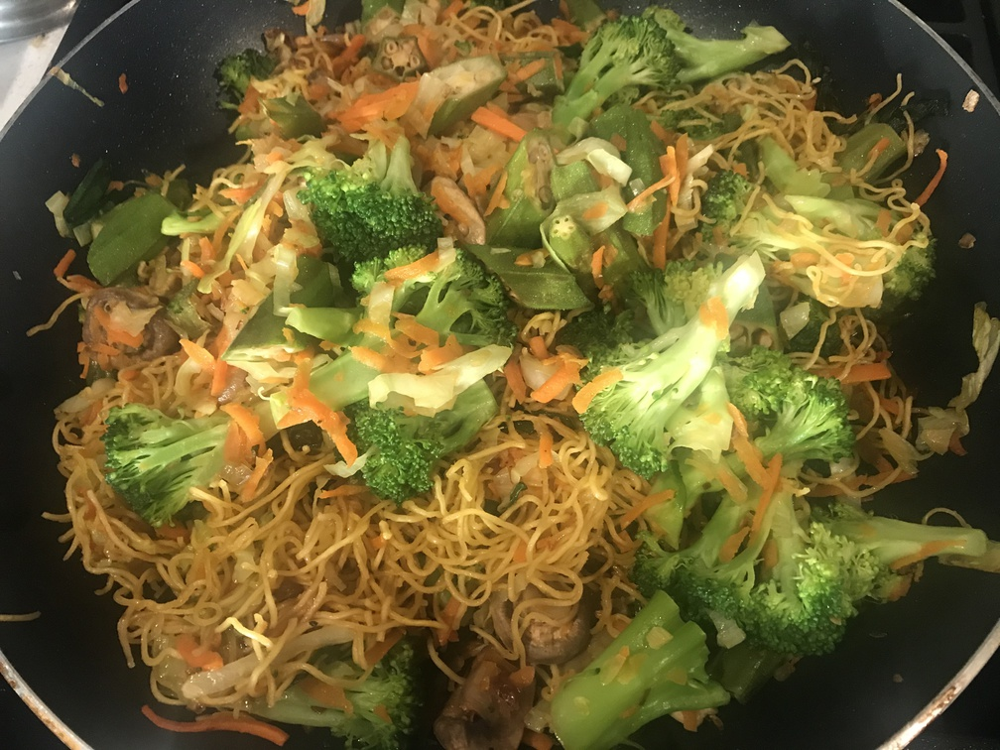

| Other | Meat | Veggie | Fruit |
|---|---|---|---|
| mi | any | bean sprouts | |
| oyster sauce | broccoli | ||
| pepper | cabbage | ||
| salt | carrot | ||
| chives | |||
| garlic | |||
| green onions | |||
| hanh kho | |||
| mushroom | |||
| okra | |||
| onion | |||
| shallot | |||
| any |
| instructions |
|---|
| Golden aromatics |
| Blanche noodles briefly |
| Stir fry mi separately with chives until golden and crispy |
| Stir fry meat and veggies separately, season with salt & pepper |
| Mix noodles and other ingredients |
| Stir on oyster sauce |